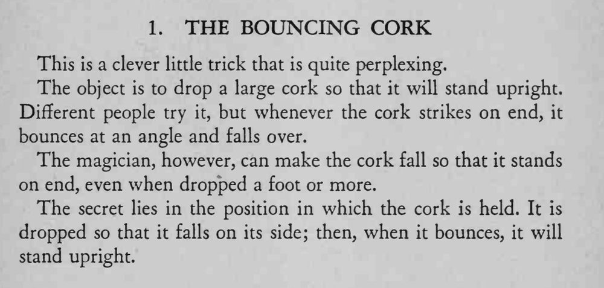

让软木塞落下后立直不倒；别人怎么试，软木塞都会弹开倒下。
软木塞要侧着落下，不是竖着落；从一英尺以上高度落下，弹起后更容易立正。

This is a clever little trick that is quite perplexing. The object is to drop a large cork so that it will stand upright. Different people try it, but whenever the cork strikes on end, it bounces at an angle and falls over. The magician, however, can make the cork fall so that it stands on end, even when dropped a foot or more. The secret lies in the position in which the cork is held. It is dropped so that it falls on its side; then, when it bounces, it will stand upright.